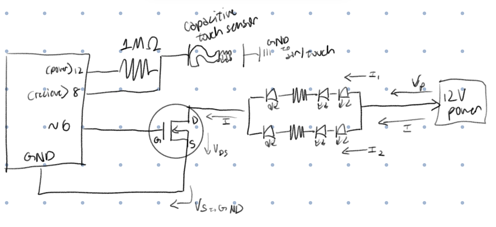
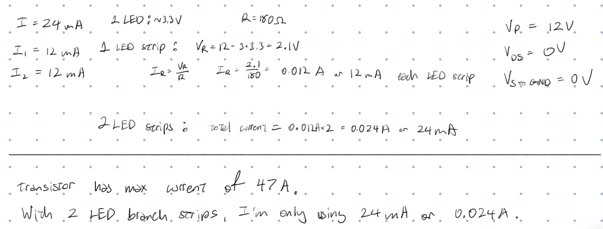
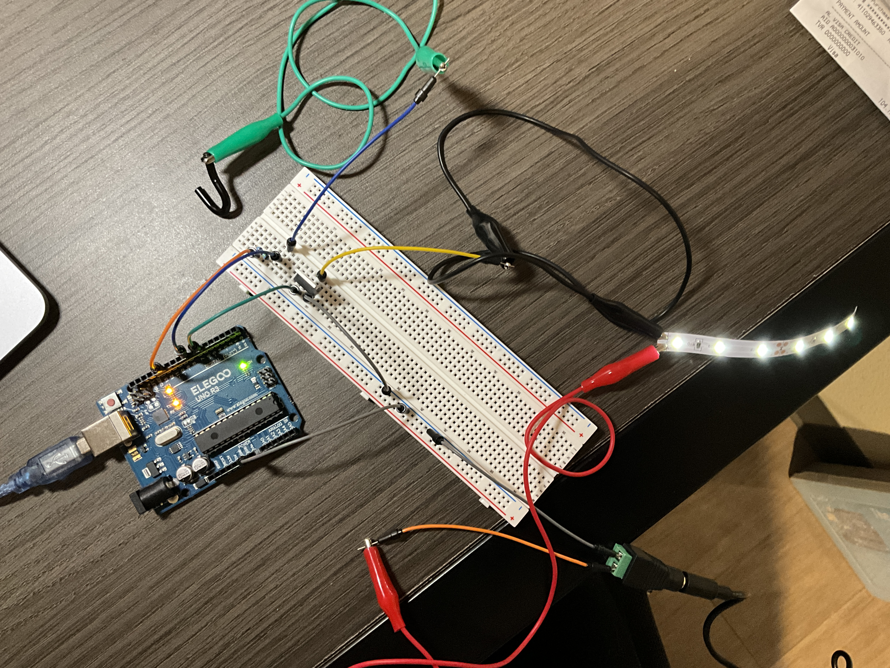
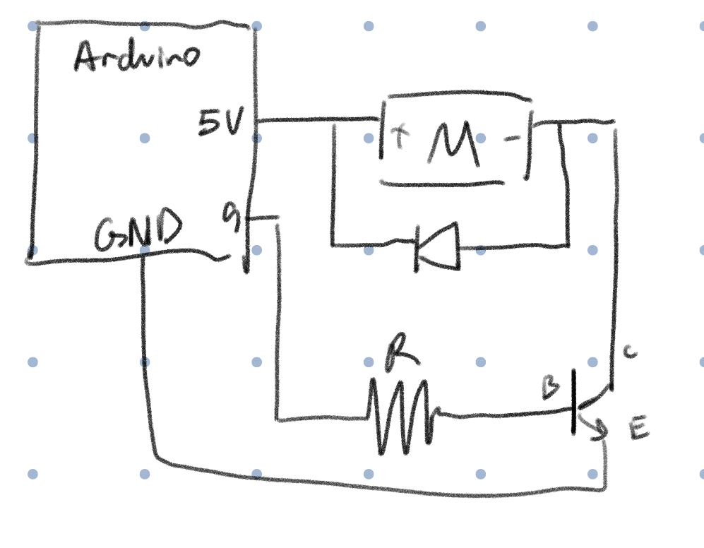
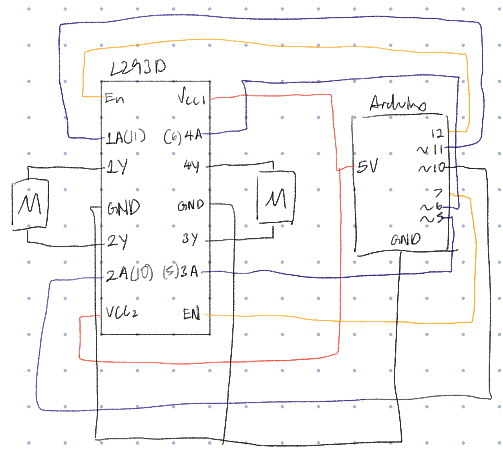

Here is all the documentation for assignment 5!
Here is all the documentation for assignment 5!

The schematic shows the use of a (self made) capacitive sensor, the use of LED strips, and a higher voltage source.

For the capacitive sensor, according to Arduino documentation, it is recommended to use a medium to large resistor (100k ohms to 50 mega ohms).
Since I didn't have a resistor value that goes up to 50 mega ohms, I used my highest resistor value which is 1 mega ohm.
For the voltage calculations, I treated the MOSFET transistor as a wire (no resistance),
which means the voltage drop from the power source to the LED strip has to be 12V so that from drain to source the voltage is 0.
For current, I calculated the current needed for 1 LED strip then multiplied it by 2 for the total current needed.
This is also the total current I'm using in my circuit which is way below the max current of the transistor (47 A).

The capacitive sensor is powered by pin 12 and the sensor is pin 8, the resistor is inbetween those pins. The wire connected to the piece of metal used for the capacitive sensor is right after the sensor wire. The LED strips are connected to the 12V power source, the MOSFET transistor, and ground.
// adds the capacitive sensor library functions to this sketch
#include
// creates capacitive sensor object to use/input, the 12 is the power and the 8 is the sensor pin, the resistor is inbetween these 2 pins
CapacitiveSensor cs = CapacitiveSensor(12,8);
// create variable for max value read through capacitive sensor (measured and estimated with the capacitive sensor example sketch and touch of 1 finger)
int sensMax = 700;
// create variable for min value read through capacitive sensor (measured and estimated with the capacitive sensor example sketch and touch of 1 finger)
int sensMin = 0;
// create variable for LED pin
int ledPin = 6;
void setup() {
// put your setup code here, to run once:
// sets up serial moniter to write the sensor values
Serial.begin(9600);
//sets pin 6 as an output to control LED strip
pinMode(ledPin, OUTPUT);
}
void loop() {
// put your main code here, to run repeatedly:
// stores the average of 30 sensor samples
long sensorVal = cs.capacitiveSensor(30);
// write to the serial monitor what value the sensor is sensing
Serial.println(sensorVal);
// maps the sensor value to a degree from 0 to 255 for analog values
int ledVal = map(sensorVal, sensMin, sensMax, 0, 255);
// writes to the LED strip what brightness to be in
analogWrite(ledPin, ledVal);
// wait 30 ms for LED to change
delay(30);
}
If I'm not touching the sensor, the LED strip is dimly lit. When I touch the sensor, the LED strip brightens.
The absolute maximum amount of current that can run between pins 2 and 3 is 47A.

Shows a schematic that uses an Arduino, a DC motor, a flyback diode, and a transistor to amplify the current needed for the DC motor.

Schematic uses the chip, 2 motors, and an Arduino.
void loop() {
//run both motors forward
digitalWrite(11, HIGH);
digitalWrite(10, LOW);
digitalWrite(6, HIGH);
digitalWrite(5, LOW);
//run both motors backwards
digitalWrite(11, LOW);
digitalWrite(10, HIGH);
digitalWrite(6, LOW);
digitalWrite(5, HIGH);
//run one motor forward
digitalWrite(11, HIGH);
digitalWrite(10, LOW);
digitalWrite(6, LOW);
digitalWrite(5, LOW);
//run the same motor backwards
digitalWrite(11, LOW);
digitalWrite(10, HIGH);
digitalWrite(6, LOW);
digitalWrite(5, LOW);
//run other motor forward
digitalWrite(11, LOW);
digitalWrite(10, LOW);
digitalWrite(6, HIGH);
digitalWrite(5, LOW);
//run other motor backwards
digitalWrite(11, LOW);
digitalWrite(10, LOW);
digitalWrite(6, LOW);
digitalWrite(5, HIGH);
}
No AI has been used in this assignment.